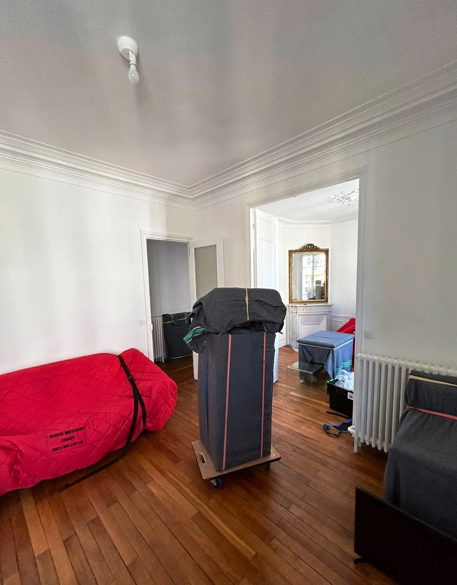
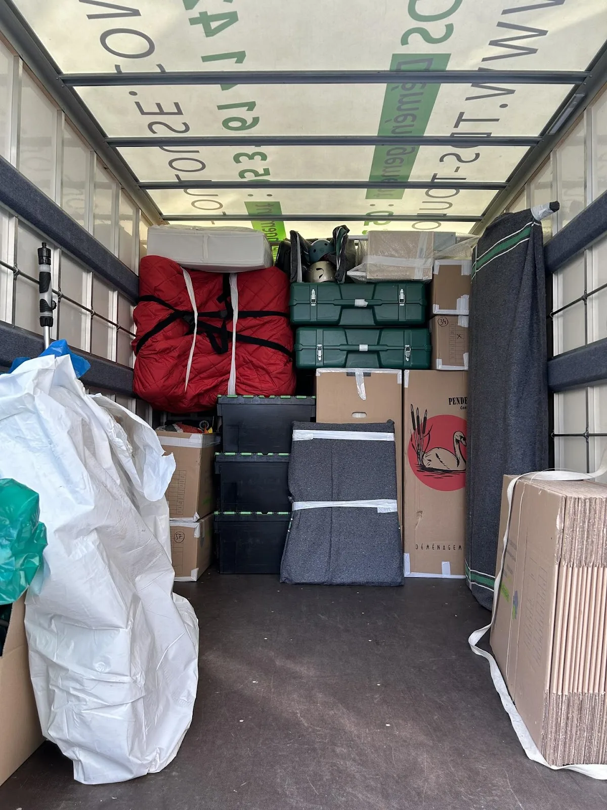
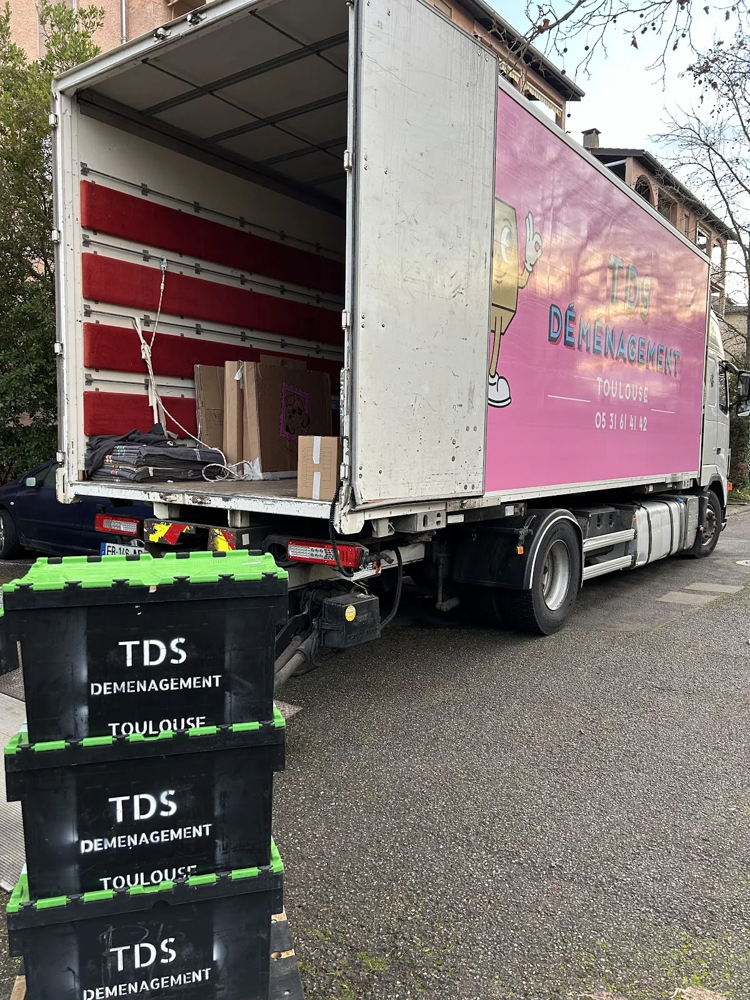
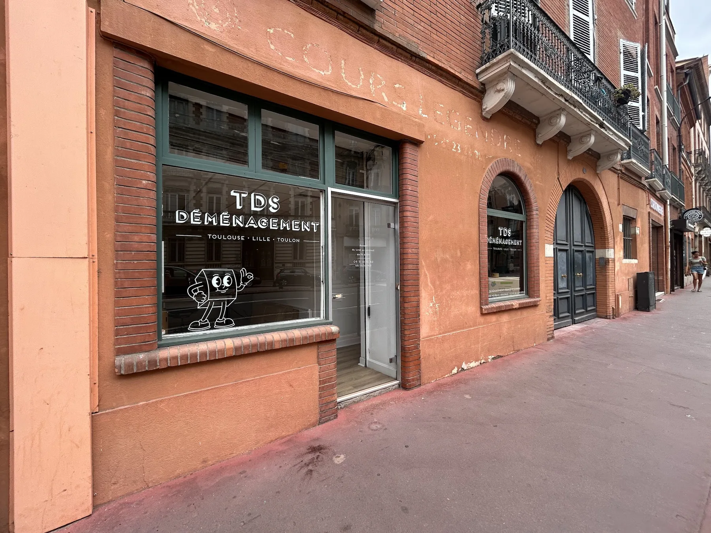
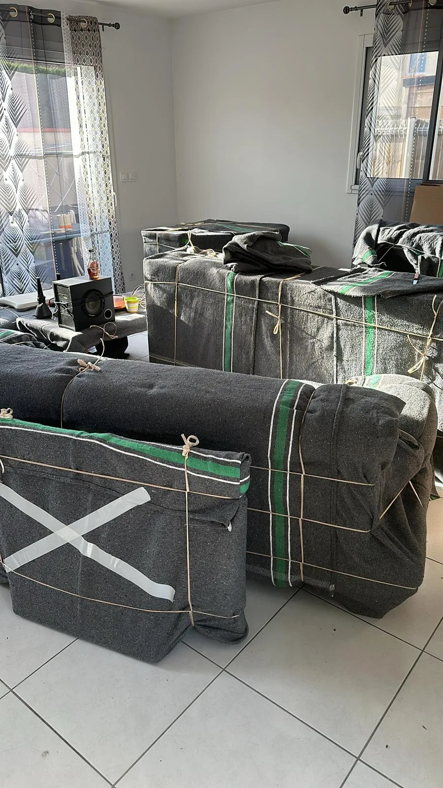

Ergo
La qualité TDS au meilleur prix.
- Protection du mobilier
- Protection des literies
- Chargement & déchargement
- Assurance incluse
Indiquez simplement votre départ, votre arrivée et votre date. TDS affine ensuite votre projet et vous propose une solution adaptée.
Appartement en centre-ville, longue distance, transfert d’entreprise, stockage temporaire ou meuble impossible à passer dans l’escalier : TDS adapte l’organisation, le matériel et le niveau de prise en charge.

Quatre formules, de l’essentiel au clé en main.
Découvrir les formules →
Une organisation adaptée aux bureaux, commerces et transferts.
Voir le service →
Location avec technicien et vérification de faisabilité.
Voir les forfaits →
Des solutions de stockage selon la durée et le besoin d’accès.
Comparer les solutions →
Préparez le jour J avec le bon matériel d’emballage.
En savoir plus →
Véhicules, objets lourds, levage et projets spécifiques.
Voir l’expertise →Centre historique, ruelles étroites, stationnement, étages, ascenseurs et accès : la préparation compte autant que le camion. L’équipe TDS connaît les contraintes de la métropole et peut intégrer les solutions de levage ou les démarches nécessaires à l’organisation.
À domicile ou en visioconférence pour prendre en compte volume, accès et particularités.
Camions, entrepôts et monte-meubles au sein du groupe TDS.
Des liaisons régulières entre Toulouse, Lille et Toulon pour organiser les trajets.



Préparez votre demande en quelques étapes : départ, arrivée, date, volume estimé et formule souhaitée.
| Lundi – Vendredi | 09:00 – 19:00 |
| Samedi | Fermé |
| Dimanche | Fermé |
4,9/5 sur 109 avis Google. Les retours récents mettent particulièrement en avant le professionnalisme, l’écoute, l’efficacité, l’adaptabilité et le soin apporté aux biens.
Nous sommes ravi du service proposé par TDS. Déplacement pour estimation et devis, communication et prestations. Nous avons effectué notre déménagement en 2 temps avec mise en container pendant 2 mois et déménagement de Toulouse à Angers. Merci à Abdel, Nabil, Alex, Youssef, Gaëtan et les autres pour leur professionnalisme, leur efficacité, leur bonne humeur, leur adaptabilité. Ils sont très serviable et respectueux et ont fait en sorte que tout soit au top du début à la fin. Nous les recommandons vivement !
J’ai choisi TDS après avoir fait plusieurs devis , et j’ai eu à faire à une équipe très professionnelle, à l’écoute , et efficace. Mes affaires sont momentanément en container chez TDS et j’attends en confiance que la même équipe à la fin de l’été vienne les livrer à ma nouvelle adresse. Monsieur MUSSCHOOT le directeur a été très à l’écoute dès le début et m’a proposé une organisation fiable et rassurante, je recommande.
Je recommande vivement TDS Déménagement. L’équipe a été très professionnelle, ponctuelle, efficace et particulièrement soigneuse avec mes meubles et mes cartons. Tout s’est déroulé rapidement, dans une excellente ambiance, avec beaucoup de sérieux et de gentillesse. Un grand merci à toute l’équipe pour leur travail de qualité. Je referai appel à eux sans hésiter et les recommande les yeux fermés.
Nous remercions vivement toutes les équipes de TDS pour leurs conseils, leur aide précieuse, leur gentillesse. Ils ont su s’adapter à nos diverses contraintes. Grâce à eux, notre déménagement était un plaisir. Nous recommandons vivement 💫
Contact rapide et agréable, une équipe à l’écoute et qui a su répondre à nos besoins et s’adapter aux changements. J’ai apprécié la mise en place du chat whatsapp qui nous a permis d’avoir un contact rapide également pour les quelques questions et doutes sur l’organisation. Je félicite également ceux qui à l’arrivé ont du s’adapter à la panne d’ascenseur inattendue. Une bonne expérience, je conseille sans hésiter. Seul conseil, changer le fournisseur de scotch car peu collant :)